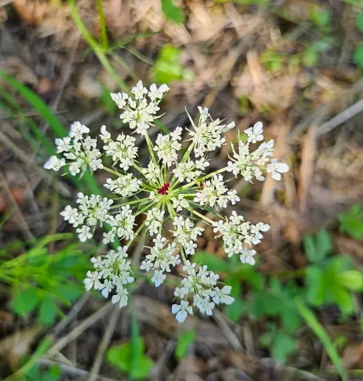

Pignut
Pignut is a root or shoot you can forage from April to June across the UK. Delicate umbellifer of old woods and meadows with fine, thread-like leaves; follow the thin stem down to a hazelnut-sized tuber.

When is pignut in season in the UK?
Pignut is usually in season April to June. Timing shifts with weather, latitude and altitude.
Where does pignut grow in the UK?
Pignut grows across the UK. Regions: South East England, South West England, Midlands and East, Northern England, Wales, Scotland, Northern Ireland.
How do you recognise pignut?
Delicate umbellifer of old woods and meadows with fine, thread-like leaves; follow the thin stem down to a hazelnut-sized tuber.
How do you harvest pignut?
Only dig roots where you have the landowner's permission, since uprooting wild plants is illegal in many places. Take a few from a large patch and backfill the hole.
How do you eat pignut?
Peeled tuber raw: tastes of chestnut and radish.
How do you store pignut?
Best fresh.
What can be confused with pignut?
Hemlock water-dropwort (Oenanthe crocata), rated deadly. Grows in the same wet ditches as watercress. It has celery-like, divided leaves and white umbels; watercress has rounded leaflets and small white four-petalled flowers. Its roots look like pale fingers; one root can kill.
What is pignut good for?
Calories.